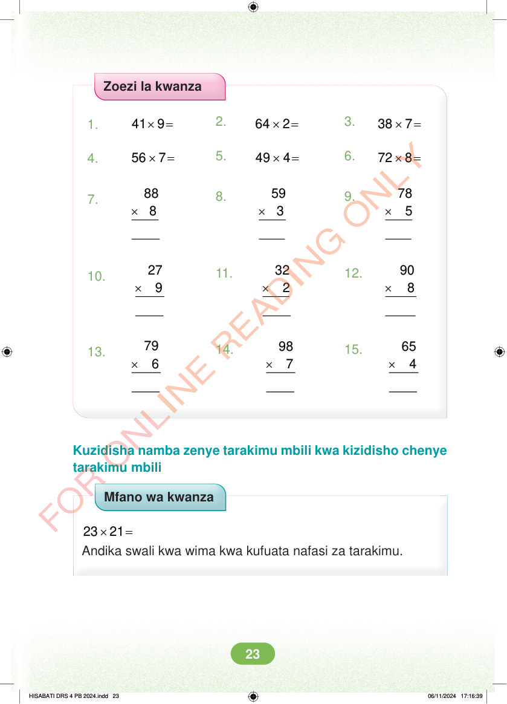

Zoezi la kwanza 1. × = 41 9 2. × = 64 2 3. × = 38 7 4. × = 56 7 5. × = 49 4 6. × = 72 8 7. × × × 88 8 8. 59 3 9. 78 5 10. × × × 27 9 11. 32 2 12. 90 8 13. × × × 79 6 14. 98 7 15. 65 4 Kuzidisha namba zenye tarakimu mbili kwa kizidisho chenye tarakimu mbili Mfano wa kwanza × = 23 21 Andika swali kwa wima kwa kufuata nafasi za tarakimu. HISABATI DRS 4 PB 2024.indd 23 HISABATI DRS 4 PB 2024.indd 23 06/11/2024 17:16:39 06/11/2024 17:16:39